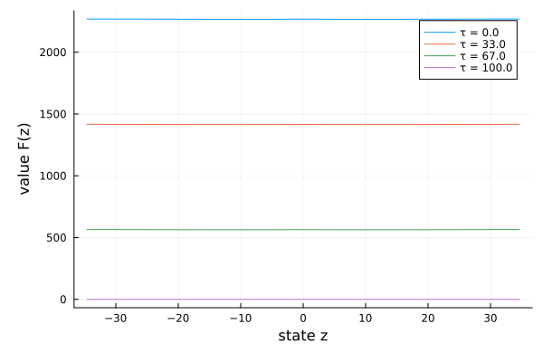

Tuckman–Vila (1992): a finite-horizon problem
So far every model has been stationary. Tuckman–Vila is time-dependent: an arbitrageur faces holding costs over a finite horizon $[0, T]$, so the value function $F(z, \tau)$ depends on calendar time. pdesolve handles this by taking a time grid τs as a fourth argument and solving backward from a terminal condition. The PDE function then takes a third argument τ:
\[\partial_\tau F + \max_i\Bigl\{ (\mu + \sigma^2 F_z)\, a i - \tfrac12 \sigma^2 (a i)^2 \Bigr\} - \rho z F_z + \tfrac12 \sigma^2 (F_{zz} - F_z^2) = 0.\]
The model
The parameters live in a struct:
using EconPDEs, Distributions, Plots
Base.@kwdef struct TuckmanVilaModel
c::Float64 = 0.06 # coupon rate of the bond
r::Float64 = 0.09 # risk-free rate
ρ::Float64 = 5.42 # mean-reversion speed of the state z
σ::Float64 = 26.72 # volatility of the state z
a::Float64 = 26.72 # position (holding-cost) scaling parameter
T::Float64 = 100 # horizon (terminal date)
endMain.TuckmanVilaModelThe state space
We build the grid, the initial guess, and the time grid first, because they fix the names used everywhere else. The grid is a NamedTuple whose key is the state variable (z); the guess is a NamedTuple whose key is the unknown function (F), which here doubles as the terminal condition at τs[end]. These names reappear inside the equation below — e.g. Fz_up is the forward finite difference of F in z. The grid spans the stationary range of $z$ (a mean-reverting Gaussian). Because the problem is finite-horizon, we also build a time grid τs over $[0, T]$, which pdesolve will march backward along.
function initialize_stategrid(m::TuckmanVilaModel; zn = 200)
d = Normal(0, sqrt(m.σ^2 / (2 * m.ρ)))
(; z = range(quantile(d, 0.00001), quantile(d, 0.99999), length = zn))
end
function initialize_y(m::TuckmanVilaModel, stategrid)
zn = length(stategrid[:z])
(; F = zeros(zn))
end
m = TuckmanVilaModel()
stategrid = initialize_stategrid(m)
yend = initialize_y(m, stategrid)
τs = range(0, m.T, length = 10)0.0:11.11111111111111:100.0The equation
We now write the function encoding the HJB equation. Following the package convention, it takes the current state (a grid point) and u (each unknown together with its finite-difference derivatives there) and returns the time derivative of each unknown. Because the problem is time-dependent, it also takes a third argument, the time τ.
function (m::TuckmanVilaModel)(state::NamedTuple, u::NamedTuple, τ::Number)
(; c, r, ρ, σ, a, T) = m
(; z) = state
(; F, Fz_up, Fz_down, Fzz) = u
Fz = (z >= 0) ? Fz_up : Fz_down
ϕ = z * (1 + z^2)^(-1 / 2)
ϕz = (1 + z^2)^(-3 / 2)
ϕzz = -3 * z * (1 + z^2)^(-5 / 2)
sτ = c / r * (1 - exp(-r * (T - τ)))
μL = ρ * z - 0.5 * σ^2 * ϕzz / ϕz + c / sτ * (ϕ - 1) / ϕz
iL = 1 / a * (μL / σ^2 + Fz)
μS = ρ * z - 0.5 * σ^2 * ϕzz / ϕz + c / sτ * (ϕ + 1) / ϕz
iS = 1 / a * (μS / σ^2 + Fz)
μ, i = 0.0, 0.0
if iL > 0
i, μ = iL, μL
elseif iS < 0
i, μ = iS, μS
end
Ft = -((μ + σ^2 * Fz) * a * i - 0.5 * σ^2 * (a * i)^2 - ρ * z * Fz + 0.5 * σ^2 * (Fzz - Fz^2))
return (; Ft)
endpdesolve takes the time grid τs as a fourth argument and marches backward from the terminal condition:
result = pdesolve(m, stategrid, yend, τs)EconPDEResult (time-dependent, 10 times)
zero: F (200) at each time
residual_norm: 2.0849096270273682e-10 (max over times)The solution
For a time-dependent problem result.zero[i] is the solution at time τs[i] (so result.zero[end] is the terminal condition). Plotting a few time slices shows the value building up as the remaining horizon lengthens — from the flat terminal $F = 0$ toward the long-horizon profile.
zs = stategrid[:z]
plt = plot(; xlabel = "state z", ylabel = "value F(z)", legend = :topright)
for i in (1, 4, 7, 10)
plot!(plt, zs, result.zero[i][:F]; label = "τ = $(round(τs[i], digits = 0))")
end
plt
This page was generated using Literate.jl.